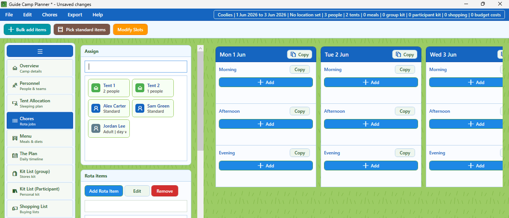

Sleeping plan
Arrange tents, bunk rooms, fields, and who sleeps where.
A Guide-focused Bear Camp planner for unit camps, covering people, sleeping plans, rota jobs, menus, kit, shopping, schedules, exports, and online collaboration.
Camp Planner for Guides keeps the same practical planning workflow as the Scout version, but with Guide-focused wording, blue visual styling, and screenshots that match the Guide edition.
It is built for Guide camps where leaders need one place for people, sleeping arrangements, rota jobs, shopping, menus, kit, daily plans, and useful paperwork.
Current Camp Planner for Guides views.
Arrange tents, bunk rooms, fields, and who sleeps where.

Plan camp jobs across the event.

Build a clear day-by-day plan for the camp.
Camp Planner for Guides is hobby software built for practical camp admin. It is shared because it solves real planning jobs and reduces the number of separate files leaders need to maintain.
The Microsoft Store is the official Windows download source. The privacy policy covers Bear Camp apps and online versions unless a separate policy is provided.
Camp Planner for Guides is offered on trust. There is no paywall, no lock, and no awkward begging bowl. Just a simple honesty-box request: if this camp tool helps your unit, please consider buying me a coffee for £1.
The first Guide law says: A Guide is honest, reliable and can be trusted.
The download is still available either way. But if it saves your unit even one evening of admin, £1 in the honesty box helps recognise the work behind it and keeps future improvements possible.
If the app saves your unit an evening of camp admin, drop a pound in the camp mug.
The online version works on mobile, tablet, laptop, desktop, and Mac. It is useful when leaders need access without installing the Windows app.
Camp Planner for Guides is available from the Microsoft Store. Treat the Store listing as the official Windows download source.